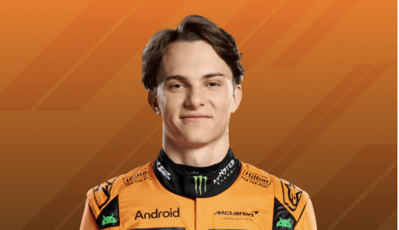

HOME
ABOUT
TEAM AND DRIVERS
RANKINGS
Join Newsletter
TEAM AND DRIVERS
10 Teams.
20 Drivers.
2 Championships.
TEAM INFORMATION
MERCEDES – Rebuilding under Toto Wolff after years of dominance with Hamilton and Russell.
RB (Racing Bulls) – Red Bull's sister team focused on youth, led by Laurent Mekies.
FERRARI – Historic but inconsistent; now led by Fred Vasseur aiming to restore glory.
ASTON MARTIN – Veteran Alonso helps push the team forward, now under Andy Cowell.
RED BULL RACING – Top team led by Christian Horner, known for speed, strategy, and Verstappen.
KICK SAUBER (Future Audi) – Preparing for Audi entry, now led by Jonathan Wheatley.
MCLAREN – Rising fast under Andrea Stella and Zac Brown with Norris and Piastri.
HAAS – American team led by Ayao Komatsu; working on consistency and development.
ALPINE – French team in transition; Oliver Oakes recently resigned as team principal.
WILLIAMS – Legendary team rebuilding under James Vowles, former Mercedes strategist.
F1 DRIVERS
Lando Norris
McLaren
Charles Leclerc
Ferrari
Pierre Gasly
Alpine
Liam Lawson
Racing Bulls
Max Verstappen
Red Bull
Lewis Hamilton
Ferrari
Jack Doohan
Alpine
Alexander Albon
Williams
Yuki Tsunoda
Red Bull

Oscar Piastri
McLaren
Esteban Ocon
Haas
Carlos Sainz
Williams
George Russell
Mercedes
Fernando Alonso
Aston Martin
Oliver Bearman
Haas
Nico Hülkenberg
Kick Sauber
Andrea Kimi Antonelli
Mercedes
Lance Stroll
Aston Martin
Isack Hadjar
Racing Bulls
Gabriel Bortoleto
Kick Sauber